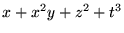

| June 25, 1999 (Friday) | ||||
| SESSION |
COMPUTER ALGEBRA MEETS EDUCATION I Bernhard Kutzler A
|
APPROXIMATE ALGEBRAIC COMPUTATION: TOWARDS SYMBOLIC-NUMERIC ALGORITHMS Tateaki Sasaki, Matu-Tarow Noda, Bernard Mourrain & Robert Corless B
|
COMBINATORIAL AND COMPUTATIONAL METHODS IN ALGEBRAIC GEOMETRY Jie-Tai Yu & Vladimir Shpilrain C
|
COMPUTER ALGEBRA FOR DYNAMICAL SYSTEMS AND MECHANICS I Victor Edneral, Ilias Kotsireas & Nikolay Vasiliev D
|
| 9:00 am |
Setting the Tone: CAS as pedagogical tools Bernhard Kutzler |
New results on the Table Maker's Dilemma Jean-Michel Muller & Vincent Lefevre* |
The Parameterization Problem for Algebraic Surfaces Josef Schicho |
Computer Algebraic Approximations--Creation of Approximated Solutions of Scientific and Engineering Problems in Symbolic Form Victor Edneral |
| 9:30 am |
Basic Skills versus Technology--not a Contradiction but a Completion Josef Boehm |
Polynomial Algebra with Coefficients of Limited Accuracy Hans Stetter |
Computing subfields in pure trascendental extensions Jaime Gutierrez & Rosario Rubio |
|
| 10:00 am |
The Use of Mathematics Specific Technology in Capstone Mathematics Teacher Preparation Courses Gary A. Harris |
A System of Automatic Algorithm Stabilization Hiroshi Sekigawa |
Again
 = 0Lenny Makar-Limanov |
Solving the problem of stabilization of a gyroscopic system with the help of Computer Algebra A. V. Banshchikov, L. A. Bourlakova & V. D. Irtegov |
| 10:30 am |
Some Reflections About the Impact of Computer Algebra Systems in the Ordering of the Curricula of Mathematics Justo Cabezas & Eugenio Roanes-Lozano* |
To Be Announced Hiroshi Kai |
Invariants of algebraic varieties Vladimir Shpilrain |
About investigation of systems with first integrals L. A. Bourlakova & V. D. Irtegov |
| 11:00 am | BREAK | |||
| 11:30 am |
A Computer Classroom Lecture: Asymptotic Convergence of Rational Functions Bill Pletsch |
To Be Announced Victor Y. Pan |
Analytical Approach for Simplifying Dynamical Systems of Polynomial Type J. Palacián & P. Yanguas |
|
| 12:00 pm |
Exam questions when using CAS for school mathematics teaching Vlasta Kokol-Voljc |
Mechanism of Cancellation Errors in Multivariate Hensel Construction with Floating-point Numbers Tateaki Sasaki |
Communications of the Poisson Series Processors PSPC with General Scientific Software A. Abad, A. Gavin & J. F. San-Juan |
|
| 12:30 pm |
Using the TI-92Plus: Examples Michel Beaudin |
Exacts predicates for arrangement of arcs of circle A. Fronville |
Parallelisation of Perturbation Analysis: the method of Multiple Scales applied to vibration problems Raya Khanin & Matthew Cartmell |
|
| 1:00 pm |
Why use CAS with TI89 in mathematical education? Classrooms experiments. Bengt Ahlander |
Approximate p-adic GCD computation D. Rupprecht |
Some computational experiments in Celestial Mechanics Jean-Charles Faugere |
|
| 1:30 pm | LUNCH | |||
| June 25, 1999 (Friday) | |||||
| SESSION |
COMPUTER ALGEBRA MEETS EDUCATION I Bernhard Kutzler A
|
APPROXIMATE ALGEBRAIC COMPUTATION: TOWARDS SYMBOLIC-NUMERIC ALGORITHMS Tateaki Sasaki, Matu-Tarow Noda, Bernard Mourrain & Robert Corless B
|
TORIC IDEALS AND INTEGER PROGRAMMING Lorenzo Robbiano C
|
COMPUTER ALGEBRA FOR DYNAMICAL SYSTEMS AND MECHANICS I Victor Edneral, Ilias Kotsireas & Nikolay Vasiliev D
|
APPLICATIONS OF COMPUTER ALGEBRA TO SIGNAL PROCESSING Jeremy Johnson & Markus Pueschel E
|
| 3:30 pm |
Using Logo as a Scaffolding to Develop Algebraic Thinking in a Virtual Classroom Garry Clark* & Edward Redden |
Towards numerical stability in normal form algorithms B. Mourrain |
Computing Toric Ideals Lorenzo Robbiano |
Some remarks on differential Hilbert polynomials in two variables G. Carra Ferro |
Minimal Syzygies and Multidimensional Filter Design Hyungju Park |
| 4:00 pm |
Discovery Experiences in Synthetic Geometry with DERIVE Miguel de Guzman |
Hybrid Rational Function Approximation and its Applications Matu T. Noda |
Extended Characteristic Sets of Finitely Generated Differential Ideals G. Carra Ferro & Vladimir Gerdt |
Group Representations and Automatic Derivation of Fast Signal Transforms Markus Pueschel |
|
| 4:30 pm |
About how to implement Geometric Transformations on a CAS E. Roanes-Macias & E. Roanes-Lozano* |
Approximate polynomial decomposition M. Giesbrecht |
New algorithms for Computing Toric Ideals Anna Bigatti |
Enumeration of intersections of Newton's polyhedrons Alexander Aranson |
A Wreath Product Approach to Signal and Image Processing Dan Rockmore |
| 5:00 pm | BREAK | ||||
| 5:30 pm |
A number-based approach to introductory algebra: A study with 11-12 year olds using graphic calculators Tenoch E. Cedillo A. |
On approximate ideals B. Trager or P. Gianni |
Decomposing Graver Test Sets in Stochastic Programming Raymond Hemmecke |
Symbolic Computation of Formal Solutions for 2 and 3 Dimensional Dynamical Systems G. Eichenmueller |
Groebner Bases and Wavelet Design Ivan Selesnick |
| 6:00 pm |
Instrumentation processes underlying the use of TI92 at high school level Badr Defouad |
Initial Ideals of Toric Ideals and Group Relaxations in Integer Programming Serkan Hosten |
A new classification of planar homogeneous quadratic systems Driss Boularas |
To Be Announced Jean-Charles Faugere & Fabrice Rouillier |
|
| 6:30 pm |
A didactical laboratory: image filtering A. Cavallone*, C. D'Apice*, M. Marsella & S. Salerno |
Computation of Normal Forms of Hamiltonian Systems in the Presence of Poisson Commuting integrals (Liouville-Integrability and Birkhoff Normal Forms) J. Mikram & F. Zinoun |
To Be Announced Jeremy Johnson |
||
| June 26, 1999 (Saturday) | |||||
| SESSION |
COMPUTER ALGEBRA MEETS EDUCATION II Bernhard Kutzler A
|
COMPUTER AIDED GEOMETRIC DESIGN AND COMPUTER ALGEBRA L. Gonzalez-Vega & J. R. Sendra B
|
APPLICATIONS OF COMPUTER ALGEBRA TO ROBOTICS Peter Kovacs C
|
COMPUTER ALGEBRA FOR DYNAMICAL SYSTEMS AND MECHANICS II Victor Edneral, Ilias Kotsireas & Nikolay Vasiliev D
|
COMPUTATIONS IN PURE MATHEMATICS (ALGEBRA, ANALYSIS, GEOMETRY, ...) Maria-Emilia Alonso, Francisco Castro & Laureano Gonzalez-Vega E
|
| 9:00 am |
A Tutorial Mathematical System for Elementary Schools Frank Postel* & Ralf Hillebrand |
Missing points and branches of real parametric curves Tomas Recio |
Forward kinematics of parallel robots Jean-Pierre Merlet |
Computational aspects of the N-body problem Ilias Kotsireas |
Homology of semidirect product of groups V. Alvarez, J. A. Armario & P. Real |
| 9:30 am |
High-Powered Technology in a Low-Level Mathematics Course Jim Schultz |
Using Computer algebra tools for off-line studies of parallel manipulators Jean-Charles Faugere, Luc Rolland & Fabrice Rouillier* |
The study by symbolic computation of the sign of the riemannian curvature in the configuration space of the 3-body problem and applications B. Elmabsout & M. Barbosu |
Analyzing the transference of the coalgebra structure on the homology of CDGAs M. J. Jimenez, P. Real & B. Silva |
|
| 10:00 am |
A Scheme for Conservative Use of Computer Algebra Rein Prank |
Applying general-purpose symbolic and numerical computation programs for Computer Graphics and CAGD. Some applications to industry Andres Iglesias & Akemi Galvez |
Self-Motions of Griffis-Duffy Type Parallel Manipulators Manfred Husty & Adolf Karger |
Oscillators in Resonance Antonio Elipe & André Deprit |
Steenrod reduced powers and computability Rocio Gonzalez-Diaz & Pedro Real |
| 10:30 am |
Mathematica and didactical innovation: a quadric use case G. Albano*, A. Cavallone, C. D'Apice* & G. Gargiulo |
Proper Parametrization of Real Algebraic Surfaces Josef Schicho |
Functional Ideal Decomposition--a Tool for Kinematics Peter Kovacs |
Construction of Invariants of Simplectic Mapping Nikolay Vasiliev |
The use of Mathematica for the classification of some nilpotent Lie algebras L. M. Camacho, J. R. Gomez & R. M. Navarro |
| 11:00 am | BREAK | ||||
| June 26, 1999 (Saturday) | |||||
| SESSION |
COMPUTER ALGEBRA MEETS EDUCATION II Bernhard Kutzler A
|
COMPUTER AIDED GEOMETRIC DESIGN AND COMPUTER ALGEBRA L. Gonzalez-Vega & J. R. Sendra B
|
SYMBOLIC-NUMERIC INTERFACE AND PROBLEM SOLVING ENVIRONMENTS I Richard Liska, Stanly Steinberg & Robert van Engelen C
|
COMPUTER ALGEBRA FOR DYNAMICAL SYSTEMS AND MECHANICS II Victor Edneral, Ilias Kotsireas & Nikolay Vasiliev D
|
COMPUTATIONS IN PURE MATHEMATICS (ALGEBRA, ANALYSIS, GEOMETRY, ...) Maria-Emilia Alonso, Francisco Castro & Laureano Gonzalez-Vega E
|
| 11:30 am |
Computer Aided Instruction for Business Calculus in an International Liberal Arts College A. Kehagias & P. N. Vlachos* |
An algorithm for approximate conversion of rational B-spline curves/surfaces to integral B-spline curves/surfaces and its implementation Jesus Espinola, Laureano Gonzalez-Vega & Ioana Necula |
Finite Difference Numerical Modelling Supported by Computer Algebra Richard Liska |
Some properties of the symplectic Lie algebra Rodney Coleman |
New ways of defining filiform Lie algebras J. C. Benjumea, F. J. Echarte, D. Fernandez, M. C. Marquez, J. Nuñez & F. Ramirez |
| 12:00 pm |
Flexible Mathematical GUI Controls for Mathematical Electronical Documents Ralf Hillebrand* & Frank Postel |
Groebner Bases and Statistics Lorenzo Robbiano |
About an algorithm of T. Oaku Maribel Hartillo |
||
| SESSION |
INTERACTION ON PHYSICS, NUMBER THEORY & COMPUTER SCIENCE I Hoang Ngoc Minh |
||||
| 12:30 pm |
Mathematica in Undergraduate Mathematics Courses--A Teaching or Learning Aid? May C. Abboud |
Ctadel: A Computer Algebra System for the Generation of Efficient Numerical Codes for PDEs Robert van Engelen |
Colored multiple zeta values relations table M. Bigotte |
Slopes in submodules of a free module Jose Maria Ucha |
|
| 1:00 pm |
Searching roots for three degree polynomials with the help of Mathematica Marilo Lopez Gonzalez & Javier Rodrigo Hitos* |
Invariant Variational Principles and Associated Numerical Schemes for Regularization of Ill-Posed Problems Ravi Venkatesan |
Nested Sums and Iterated Integrals D. Bradley |
Computing Toric First Syzygies P. Pison-Casares & A. Vigneron-Tenorio |
|
| 1:30 pm | LUNCH | ||||
| June 26, 1999 (Saturday) | |||||
| SESSION |
COMPUTER ALGEBRA MEETS EDUCATION II Bernhard Kutzler A
|
DEMOS OF COMPUTER ALGEBRA SYSTEMS Michael Wester & Winfried Neun B
|
SYMBOLIC-NUMERIC INTERFACE AND PROBLEM SOLVING ENVIRONMENTS II Richard Liska, Stanly Steinberg & Robert van Engelen C
|
COMPUTER ALGEBRA IN THE SPANISH EDUCATIONAL SYSTEM Lola Rodriguez D
|
COMPUTATIONS IN PURE MATHEMATICS (ALGEBRA, ANALYSIS, GEOMETRY, ...) Maria-Emilia Alonso, Francisco Castro & Laureano Gonzalez-Vega E
|
| 3:30 pm |
Derivations and Visualizations for the Hydrogen Atom Joseph D. Myers*, Kelley B. Mohrmann & Terry T. Crow |
Some Perspectives on the Usability of Computer Algebra Systems Michael Wester |
Group Invariant Finite-Difference Schemes for Advection Equation Ravi C. Venkatesan |
Aparicion de nuevos contenidos curriculares en matematicas mediante la aplicacion de nuevas tecnologias Justo Cabezas Corchero |
The ideal generation conjecture for s general rational curves F. Orecchia |
| 4:00 pm |
CONVODE: A Reduce package for solving differential equations Alain Moussiaux |
Solving a RLC Circuit using Convolution with DERIVE for Windows Michel Beaudin |
Usefulness of computer algebra methods in numerical simulations Michel Fournie |
Las herramientas euclideas y el ordenador Tomas Recio |
Basic Algorithms for Specialization in Groebner Bases A. Montes |
| 4:30 pm |
Exploring sequences with DERIVE Paolo Boieri |
The Computer Algebra System CoCoA Lorenzo Robbiano |
Prototyping Symbolic-Numeric Algorithms using Naglink Brian J. Dupee* & James H. Davenport |
Diferentes opciones para la resolucion de problemas con calculadoras graficas Agustin Carrillo |
The Generation of Polya Polynomials using Macsyma, with Applications Bill Pletsch |
| 5:00 pm | BREAK | ||||
| SESSION |
TEACHING OF EFFICIENT MATHEMATICS A. Akritas & Gennadi Malaschonok |
||||
| 5:30 pm |
A project of Computer Aided Learning: A course of Computer Algebra in the web Rafael J. Villanueva Mico & A. Hervas |
The REDLOG Package--Tools and Applications Volker Weispfenning |
A symbolic-numerical package for linear stability analysis of numerical methods for ODEs Massimo Cafaro & Beatrice Paternoster* |
Cambios curriculares en la enseñanza del Algebra Lola Rodriguez Soalleiro |
Duality in Effective Algebraic Geometry Bernard Mourrain |
| 6:00 pm |
A study of particular methods for the approximate construction of some regular polygons by using Mathematica 3.0 Juan A. Aledo, Juan C. Cortes & Fernando L. Pelayo |
MuPAD--An Open Computer Algebra System and its Approach of Software Integration Ralf Hillebrand & Frank Postel |
A Symbolic Numeric Environment for Analyzing Measurement Data in Multi-Model Settings Christoph Richard & Andreas Weber* |
Busqueda automatica de lugares geometricos Eugenio Roanes Macias & Eugenio Roanes Lozano |
A Fast Computation of Hook Schur Functions F. Gaeta |
| 6:30 pm |
Computer Algebra Applied to Mathematical Cartography Carlos Enriguez Turiño |
Extraction of Low Order Boolean Rules from Trained Neural Networks using a Computer Algebra System Terence Etchells |
Matematicas en Pantalla Rafael Perez Gomez & Miguel Posadas |
||
| evening | 7:00pm - 8:00pm: Business Session in A | ||||
| June 27, 1999 (Sunday) | ||||
| SESSION |
TEACHING OF EFFICIENT MATHEMATICS A. Akritas & Gennadi Malaschonok A
|
MATHEMATICS ON THE INTERNET Angel Diaz & Erich Kaltofen B
|
APPLICATIONS OF QUANTIFIER ELIMINATION Volker Weispfenning & Hoon Hong C
|
INTERACTION ON PHYSICS, NUMBER THEORY & COMPUTER SCIENCE II Hoang Ngoc Minh D
|
| 9:00 am |
A comparative study between two general methods for the approximate construction of regular polygons by using Mathematica 3.0 Juan A. Aledo, Juan C. Cortes & Fernando L. Pelayo |
Interfacing Proof Checkers With OpenMath Olga Caprotti |
A Robust Control System Design by a Special Quantifier Elimination Method using a Sturm-Habicht Sequence Hirokazu Anai & Shinji Hara |
Functional Equations on Polylogarithms with Axiom Hoang Ngoc Minh |
| 9:30 am |
Possibilities for Alternative Uses of the "Calculus and Mathematica" Approach Alkiviadis Akritas, Stelios Kapranidis & Athina Katalifou |
Plug and Play Mathematical Components Mike Dewar |
A Special Quantifier Elimination Algorithm for Pham Systems Laureano Gonzalez-Vega & Neila Gonzalez-Campos |
Algebraic Structures on the Set of Multiple Zeta Values Mike Hoffman |
| 10:00 am |
Classical Mathematics with Mathematica Alkiviadis Akritas & Zamir Bavel |
To Be Announced Angel L. Diaz |
A new solution of the quartic problem: with application to integration David J. Jeffrey |
Computer aided Knot Theory using Mathematica and MathLink N. Imafuji |
| 10:30 am |
Calculus and the Race Track Principle Alkiviadis Akritas & Zamir Bavel |
Mathematics on the Web--Past, Present and Future Dave Raggett |
Reach Set Computation for Linear Vector Fields using Quantifier Elimination Gerardo Lafferriere, George J. Pappas & Sergio Yovine |
Combinatorics on Algebraic Identification G. Jacob |
| 11:00 am | BREAK | |||
| 11:30 am |
Some elementary mathematics revisited and revised David J. Jeffrey |
Unicode Encoding of Mathematics Murray Sargent |
Quantifier Elimination for Trigonometric Polynomials by Cylindrical Trigonometric Decomposition Petru Pau & Josef Schicho |
Computational Construction of representation matrices for parallel version polynomial invariants M. Ochiai |
| 12:00 pm |
Teaching Error-Correcting Codes, Discrete Mathematics and Modern Algebra with Computer Algebra Igor Gachkov & Kenneth Hulth |
Stylesheets for Mathematical Web Pages Stephen Watt |
The Study of Stability using Computer Algebra Stanly Steinberg |
Computational Decomposition of homeomorphisms into canonical Dehn's twists Y. Sakata |
| 12:30 pm |
Teaching of efficient mathematics Gennadi Malaschonok & Natalia Malaschonok |
Accessing Quantifier Elimination Packages Over the Internet Out of General Purpose Systems Andreas Weber |
On l-adic iterated integral Z. Wojtkowiak |
|
| 1:00 pm |
Efficient methods of mathematical analysis Gennadi Malaschonok |
Concluding Discussion of the Issues Addressed in the Talks (Moderator with Audience Participation) Erich Kaltofen |
Semilinear motion planning in REDLOG Volker Weispfenning |
|
| 1:30 pm | LUNCH | |||